"VOIR" Chapter I, "VOIR" Chapter II, fashion film produced and directed by Milo Miranda. Berlin, DE. Barcelona, ES. Mexico City, MX. Porto, PT.
The inspiration behind these two chapters, presented in different countries and magazines, was the French verb voir, meaning “to see.” Through this editorial, I wanted to portray a personal vision of Mexico City through the eyes of a Mexican citizen. Both chapters showcased Calvin Klein’s 2018 collection with never-before-seen looks, combined with pieces from Mexican designers, highlighting connections and collaboration within the fashion industry. The editorial was also presented at Cine Tonalá in Mexico City, with the accompanying video traveling internationally, and it was published physically in Veneno magazine.
"VOIR" Chapter I
"VOIR" Chapter II
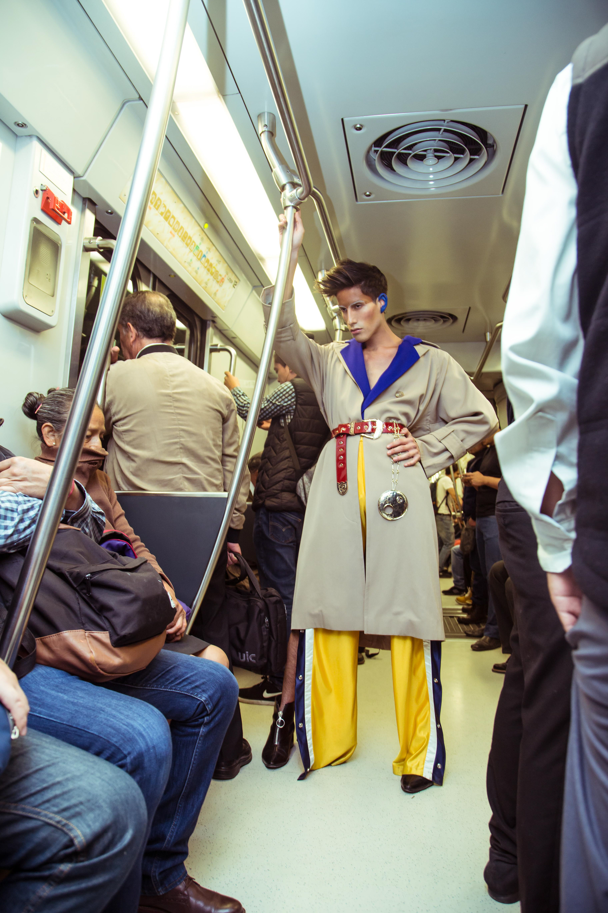
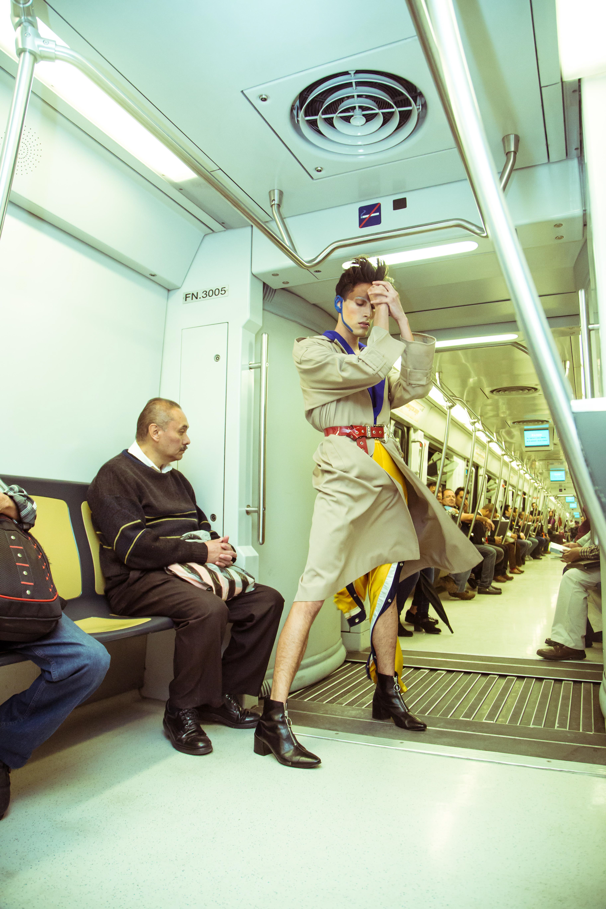
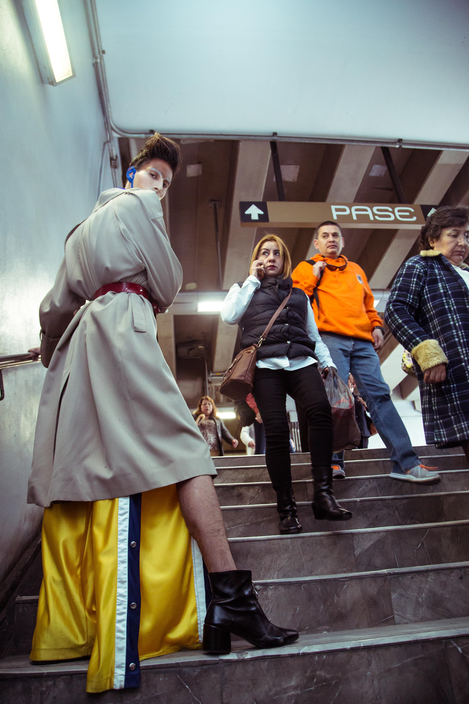
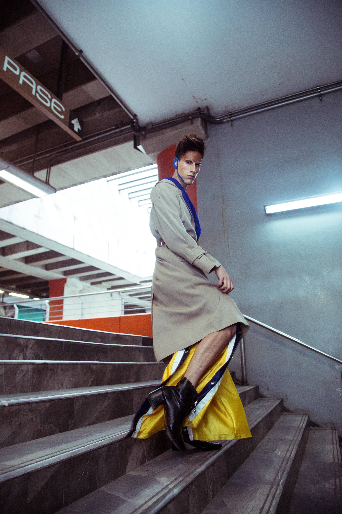
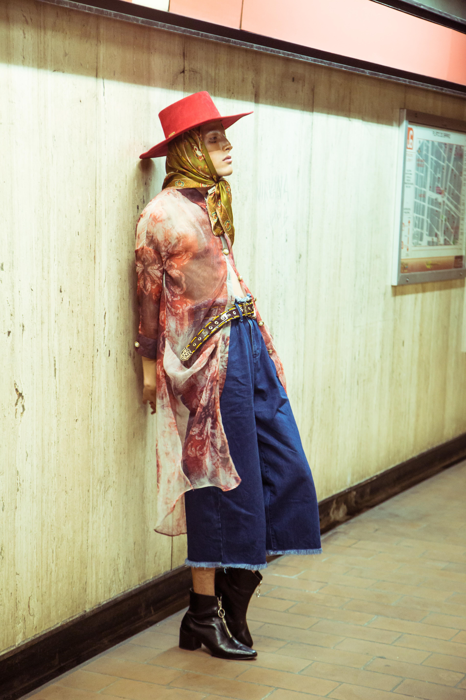
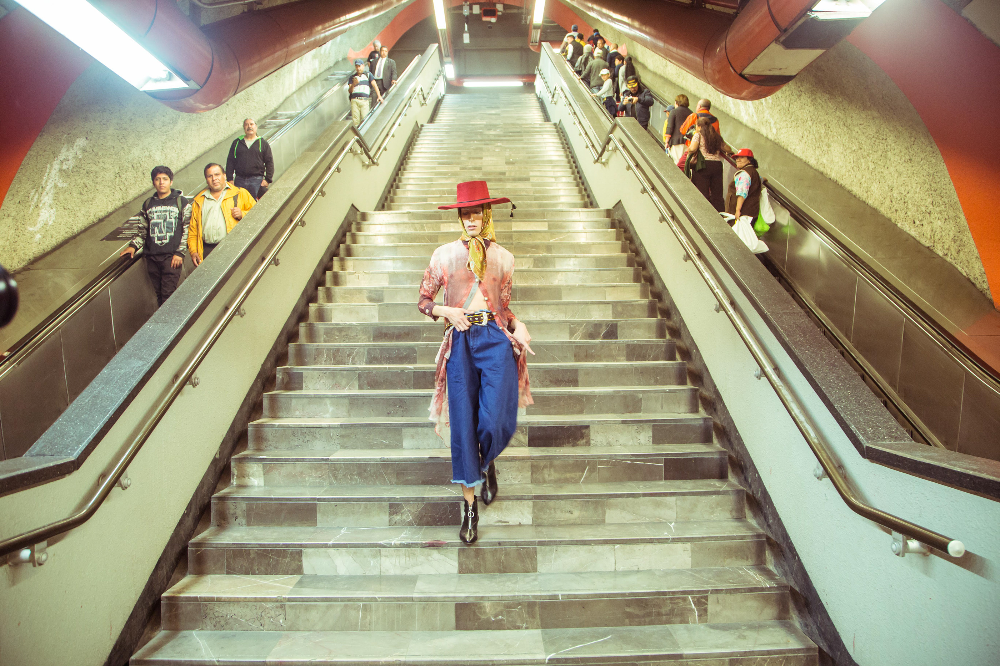
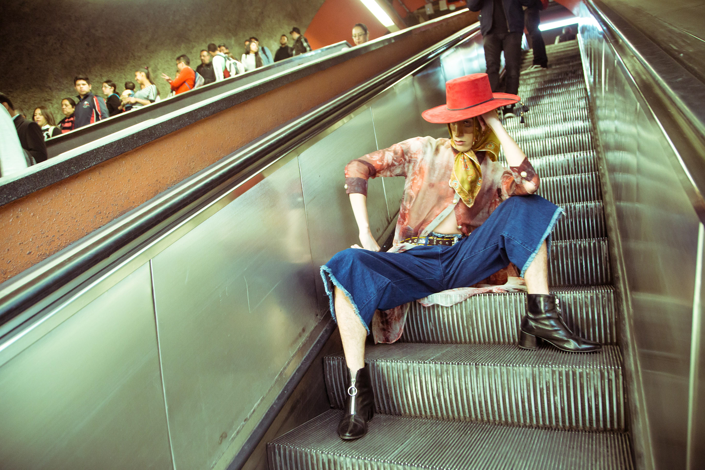
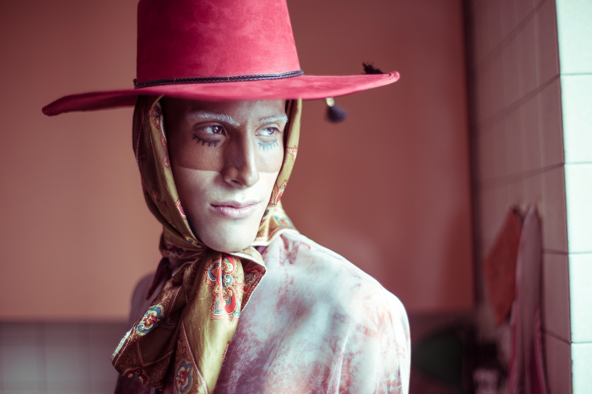
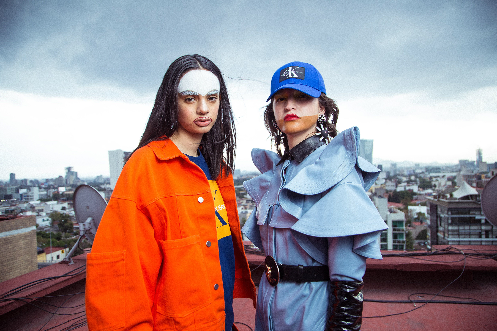
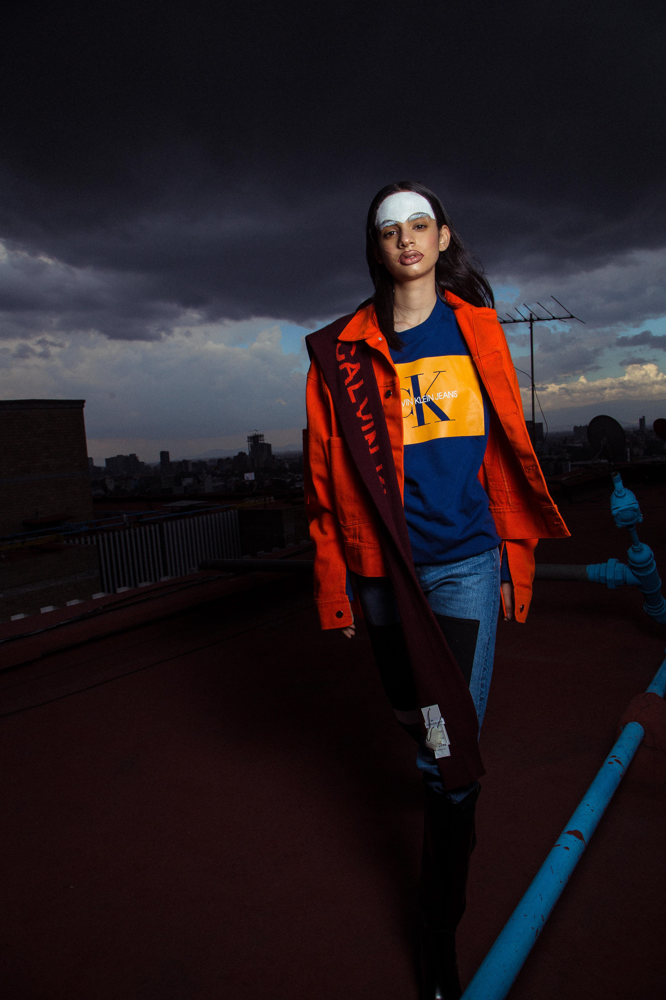
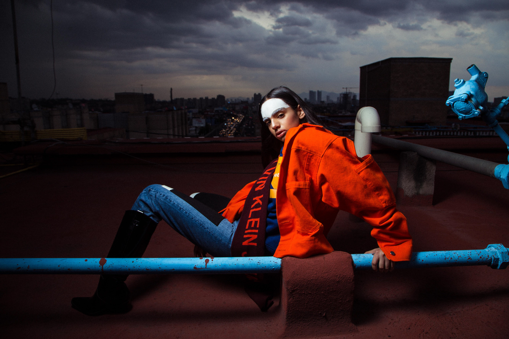
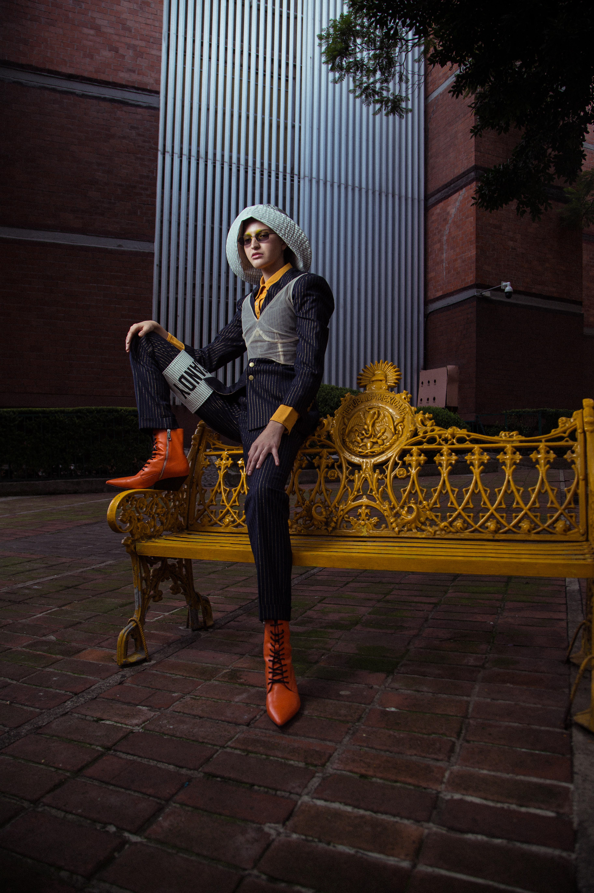
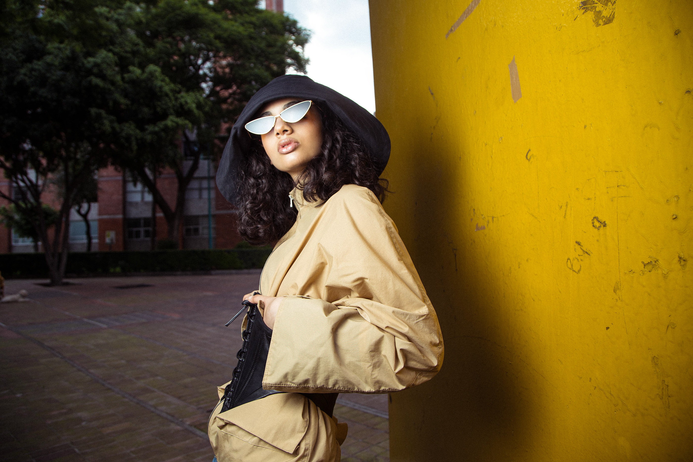
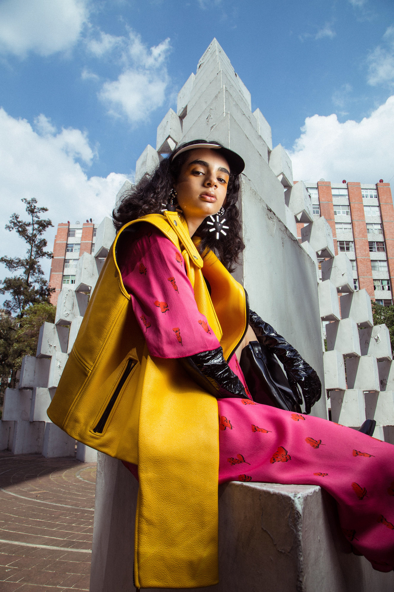
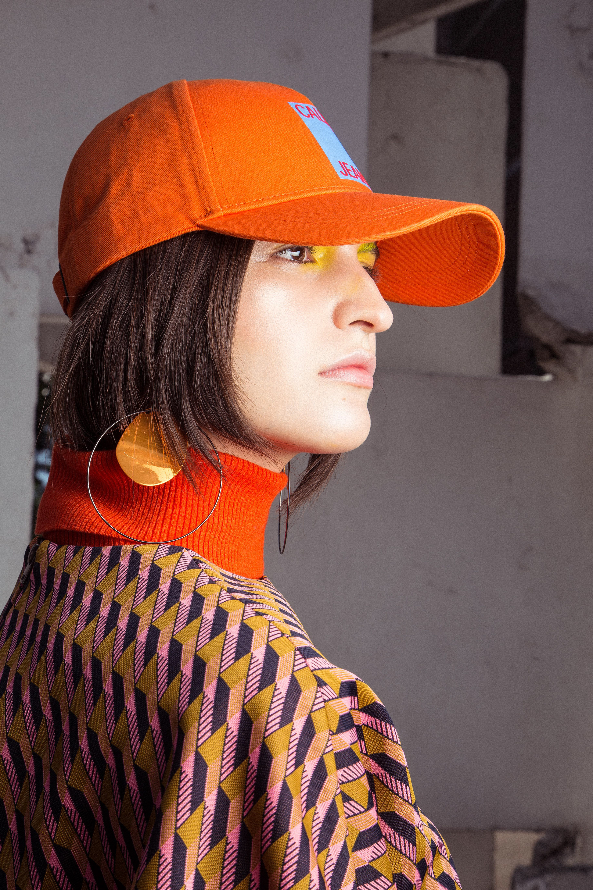